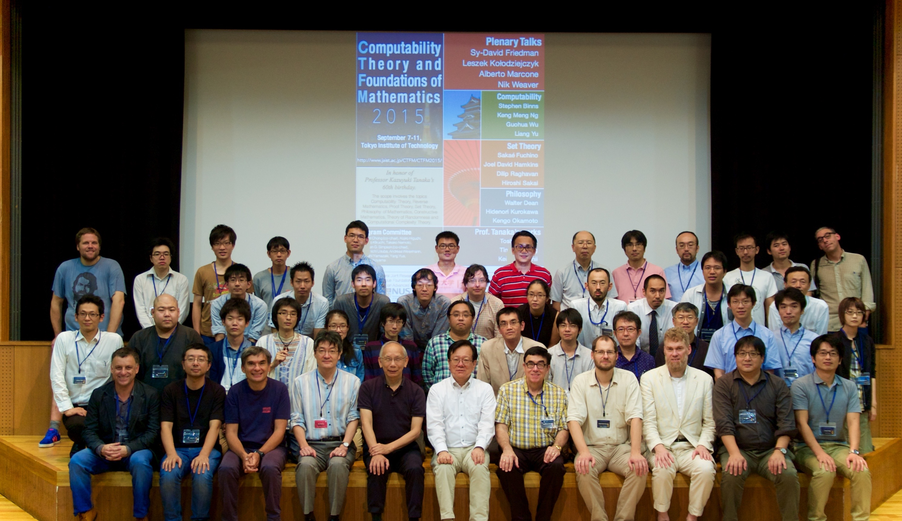

Tokyo Institute of Technology, Tokyo, Japan, September 7 - 11, 2015

Computability Theory and Foundations of Mathematics (CTFM) aims to develop computability theory and logical foundations of Mathematics. The scope involves the topics Computability Theory, Reverse Mathematics, Nonstandard Analysis, Proof Theory, Set Theory, Philosophy of Mathematics, Constructive Mathematics, Theory of Randomness and Computational Complexity Theory. In honor of Professor Kazuyuki Tanaka's 60th birthday, this year's conference will include sessions covering areas in which Professor Tanaka has worked.
This conference is held jointly with a workshop of Bilateral Joint Research Project sponsored by the Japan Society for the Promotion of Science and the National University of Singapore. See the previous workshop on this project JSPS-NUS Joint Workshop in Mathematical Logic and Foundations of Mathematics (March 6 - 8, 2015, Kanazawa, Japan).
This is the fifth conference of CTFM conference series. See also the last year conference Computability Theory and Foundations of Mathematics 2014 (February 17 - 20, 2014, Tokyo, Japan).
This conference is partially supported by Inoue Foundation for Science.
News
- [New Information!] [09/22/15] Presentation slides are available (linked from the timetable page).
- [New Information!] [09/19/15] Group photo and Conference poster have been uploaded.
- [New Information!] [09/19/15] Booklet has been updated.
- [09/02/15] Booklet has been uploaded.
- [09/02/15] Program with titles and Timetable have been updated.
- Timetable has been uploaded.
- Program with titles has been uploaded.
- The list of invited speakers has been updated.
- The online registration system is now opened. (Registration deadline: August 21, 2015).
- The list of invited speakers has been updated.
- The list of invited speakers and the list of hotels close to the conference venue have been updated.
- The deadline for abstract submission has been extended to the 29th June, 2015.
- Call for presentaition started.
- CTFM 2015 web site opened.
Invited Speakers
- Plenary talks
- Sy-David Friedman (Kurt Gödel Research Center)
- Leszek Kołodziejczyk (University of Warsaw)
- Alberto Marcone (The University of Udine)
- Nik Weaver (Washington University)
- Session on Computability Theory
- Stephen Binns (Qatar University)
- Keng Meng Ng (Nanyang Technological University)
- Guohua Wu (Nanyang Technological University)
- Liang Yu (Nanjing University)
- Session on Set Theory
- Sakaé Fuchino (Kobe University)
- Joel David Hamkins (City University of New York)
- Dilip Raghavan (National University of Singapore)
- Hiroshi Sakai (Kobe University)
- Session on Philosophy
- Walter Dean (University of Warwick)
- Hidenori Kurokawa (Kobe University)
- Kengo Okamoto (Tokyo Metropolitan University)
- Special session on Professor Tanaka's works
- Toshio Suzuki (Tokyo Metropolitan University)
- Tin Lok Wong (Kurt Gödel Research Center)
- Keisuke Yoshii (Okinawa National College of Technology)
Programme Committee
- Chi Tat Chong (National University of Singapore, co-chair)
- Kojiro Higuchi (Chiba University)
- Makoto Kikuchi (Kobe University)
- Takako Nemoto (JAIST)
- Stephen G. Simpson (Pennsylvania State University, co-chair)
- Toshimichi Usuba (Kobe University)
- Andreas Weiermann (Ghent University)
- Takeshi Yamazaki (Tohoku Universigy)
- Yang Yue (National University of Singapore)
- Keita Yokoyama (JAIST / UC Berkeley)
Organising Committee
- Makoto Fujiwara (JAIST)
- Ryo Kashima (Tokyo Institute of Technology, local chair)
- Takayuki Kihara (UC Berkeley)
- Takako Nemoto (JAIST)
- Florian Pelupessy (Tohoku University)
- Takeshi Yamazaki (Tohoku University, co-chair)
- Keita Yokoyama (JAIST / UC Berkeley, co-chair)
Conference Poster Design
- Masaya Suzuki (Tohoku University)